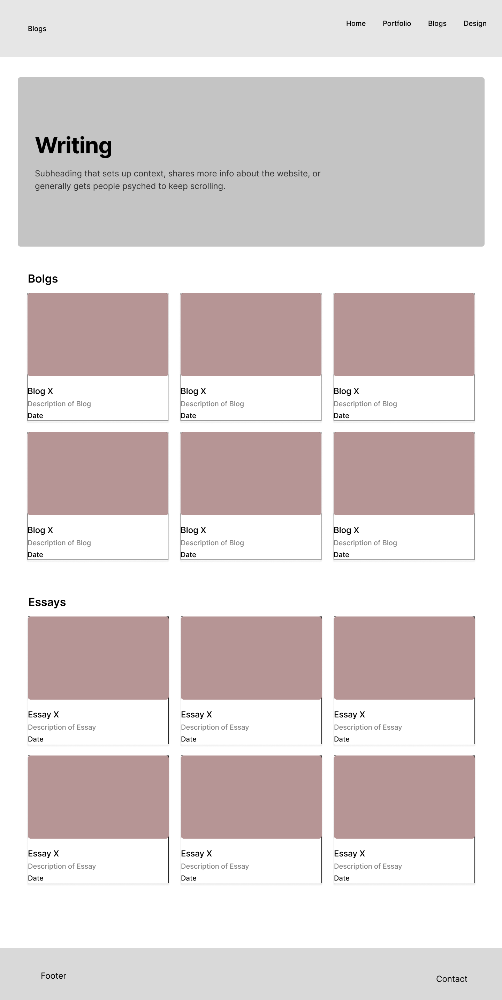
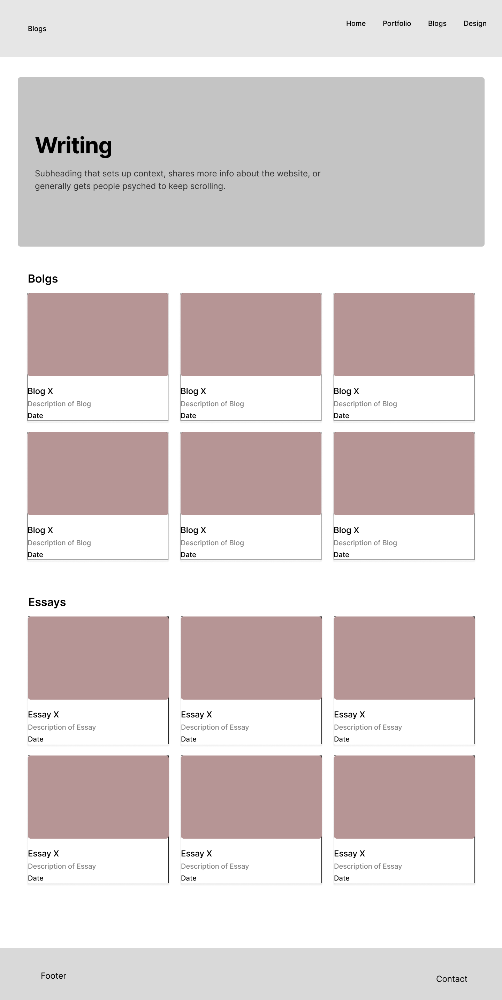
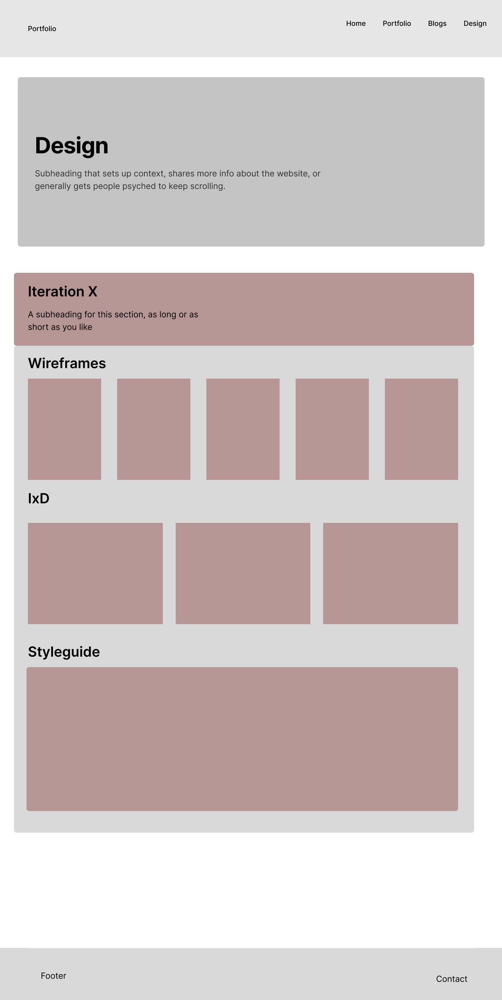
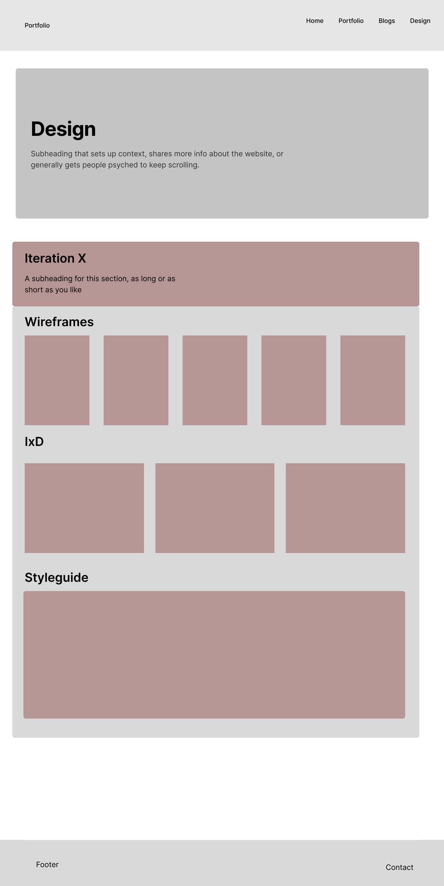
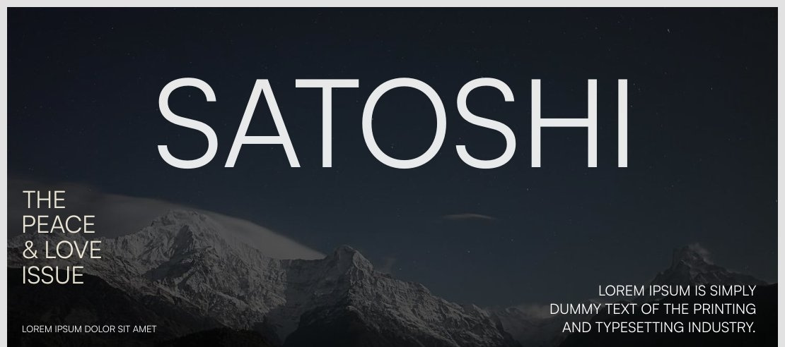
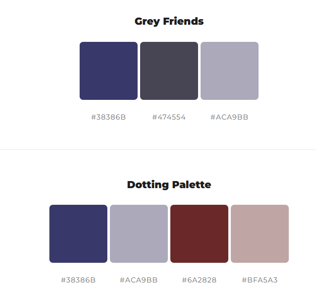

Iteration One: Getting Started
Original Wireframes
I look forward to seeing if these wireframes materialize with the addition of CSS.


Aesthetic Inspiration
Aesthetically I am drawing inspiration from "Zines". I want the website to have the essence of physical media. I am particularly interested in the style of collages and screen printing and would like my website to have that essence.


Flow of Website
I would like almost every part of the website to be accessible from any other part of the website.

Fonts and Colours
I want the structure and feel of the site to be quite grungy and harsh and therefore I am opting for a softer font.

The following colours are under consideration:

Iteration Two: CSS and dynamic sites
Wireframes
 

 

User Flow
File Structure

Flow of the site

Style Guide
Fonts
For general text
For headings and interesting elements
Inspiration
I would still like to emulate physical media. I am looking into stylistic elements that mimic paper and scree printing
css-paper-effects
Iteration Three: JavaScript is Cool
Each section of this design process seems to be increasingly more challenging than the previous, but as a result, way more rewarding and way cooler. (I know "cool" is a bit of a non-word, but I believe my point is made without the use of flowery language.)
I found HTML very boring, CSS quite cool, and JavaScript absolutely awesome. I understand the reason for us being taught the three separate disciplines at separate times, but I would be lying if I said I would ever want to make a website like that again. I feel the completely separated workflow seems quite inefficient. I find myself doing and redoing things over and over again, somewhat paralyzed by all the possible ways to do that one thing. I found this very frustrating, and my main goal going forward is to focus on developing in a way that is modular and scalable.
For example, I started using the :root system in CSS and plan to keep doing things like that. I believe JavaScript is perfect for that.
My goals for this iteration were mostly to just get JavaScript in there, but also in a way that did not feel unnecessary. I personally find many animations and movement in a website annoying and even cumbersome. I therefore tried to do mostly functional JavaScript. I'm not sure how successful I was, but I am excited to polish it for my final iteration. A core focus will be to get back the physical media idea I originally had. I do feel that essence has mostly been lost. There are also a few things I opted to do with HTML and CSS and not JavaScript that I would like to implement with JavaScript — specifically injecting the footer, nav bar, and 'to top' button for each page.
Here are some effects I want to add:
I want to add a CD case effect to my music player on the home screen.
I want to add a gallery wall effect to my homepage game selection to add to the physical media feel.
I am thinking of expanding my color palette slightly.
I wanted to add a Personal page (I still might), but I do feel like I would rather polish and perfect what I have now before I add anything more than is needed. I also attempted to embed a 3D model, but it only worked in Live Server and I couldn't figure out why.
Overall, the design for this website has been challenging, and to be honest, I feel like I only now have the flow of it down. I almost want to make a new style guide and wireframes that are maybe just slightly different, just because I understand better what needs to be taken into account now. I think being taught these design steps as separate steps is useful (especially for teaching purposes), but they are far more overlapped than we were taught, and I look forward to designing with a better grasp of the bigger picture.